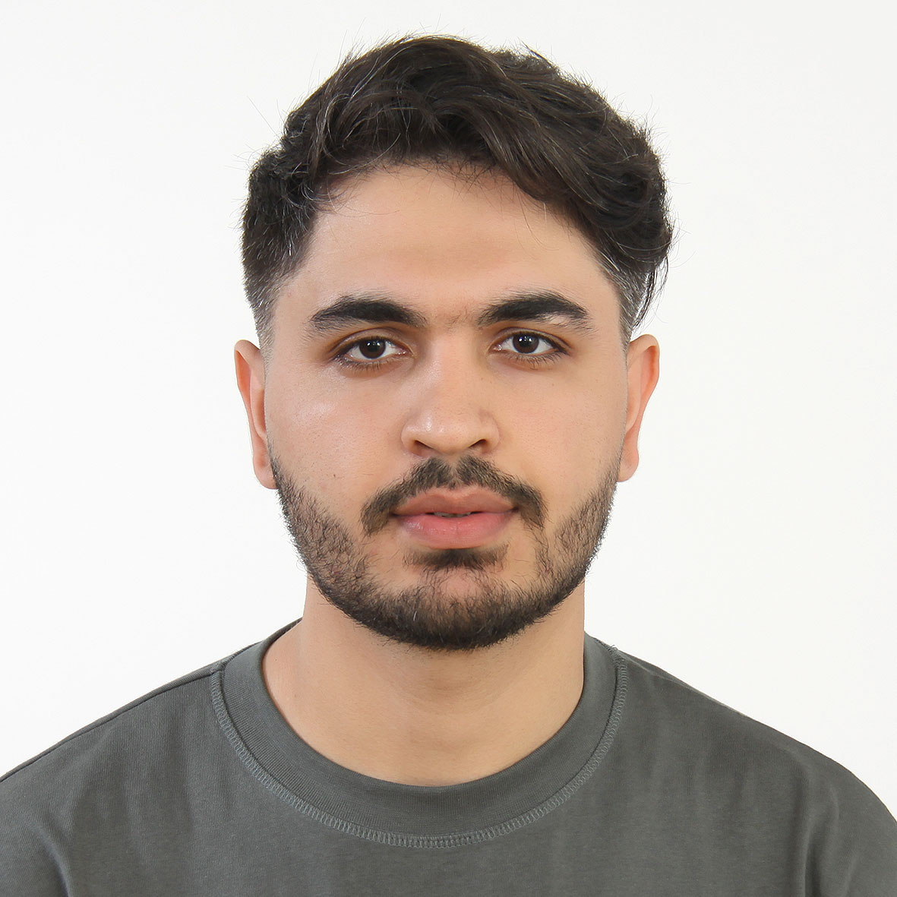
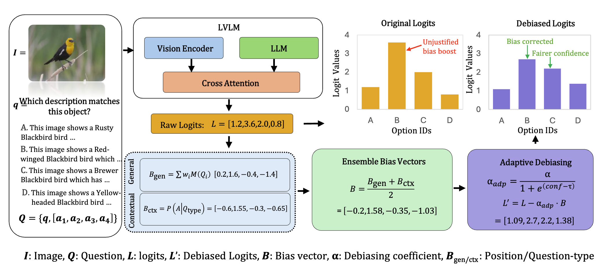
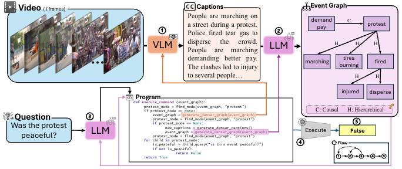

Ph.D. student in Computer Science at Virginia Tech, working with Dr. Chris Thomas on video-language understanding and cross-modal reasoning. Previously M.Sc. at George Washington University.

EMNLP 2025 (Main) · *Proposed and implemented the bias mitigation method

NeurIPS 2024 MAR Workshop · Spotlight
See Google Scholar for full list.
2024 – Present · GPA: 4.0 · Advisor: Dr. Chris Thomas
2022 – 2023 · GPA: 3.76